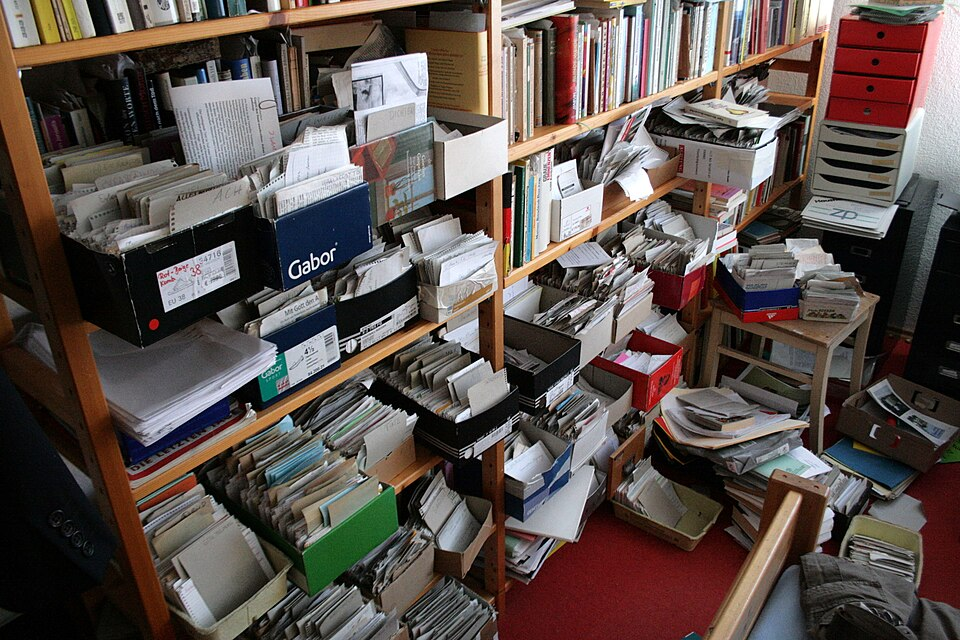

IndigoBunting
IndigoBunting
Good morning!
Nur das Schöne wird die Welt retten!
Fjodor Dostojewski
Nicht verzagen, Doc Alvers fragen!
Informatik — Grundkurs 11
Informationen managen
Informationsflut, der Kreislauf des Informationsmanagements — und das Wissen in den Köpfen
Nicht verzagen, Doc Alvers fragen!
Kapitel 01
Informationsflut
Mehr, als man lesen kann
Nicht verzagen, Doc Alvers fragen!
Wo wir stehen
Letzte Woche: Signal, Nachricht, Information, Daten — und wie aus der Welt Bits werden
Heute die Frage danach: Wie geht man mit der Menge um?
Leitfrage: Wie hat man die richtige Information zur richtigen Zeit — ohne darin zu ertrinken?
Nicht verzagen, Doc Alvers fragen!
Was Informationsflut heißt
Das Angebot an Informationen wächst schneller, als es verarbeitet werden kann
Information Overload: Nachrichten und Meldungen verhindern konzentriertes Arbeiten
Die Folge ist paradox: Mehr Information führt oft zu schlechteren Entscheidungen
Am wirksamsten dagegen: weniger Kanäle abonnieren und feste Zeiten zum Lesen
Nicht verzagen, Doc Alvers fragen!
Euer eigener Medientag
Was kommt rein?
Messenger und Klassenchats
Social Media und Videos
Schulportal und Mails
Push-Meldungen von Apps
Was davon braucht ihr?
Wie viele Meldungen kamen gestern?
Welche hättet ihr vermisst?
Welche haben euch unterbrochen?
Was lässt sich bündeln oder abbestellen?
Nicht verzagen, Doc Alvers fragen!
Kapitel 02
Der Kreislauf
Bedarf klären, beschaffen, aufbereiten, nutzen, bewerten
Nicht verzagen, Doc Alvers fragen!
Fünf Schritte des Informationsmanagements
| Schritt | Leitfrage | am Beispiel Referat |
|---|---|---|
| Bedarf klären | Wozu brauche ich es, wie genau? | Thema eingrenzen, Umfang festlegen |
| beschaffen | Wo finde ich es? | Bibliothek, Fachportal, Suchmaschine |
| aufbereiten | Wie wird es verständlich? | ordnen, zusammenfassen, verknüpfen |
| nutzen | Wofür setze ich es ein? | Vortrag, Handout, Folien |
| bewerten | Hat es getaugt? | Rückmeldung: Was fehlte, was war zu viel? |
Die Bewertung steht am Ende, weil erst nach der Nutzung sichtbar wird, ob die Information getaugt hat
Nicht verzagen, Doc Alvers fragen!
Warum der Bedarf zuerst kommt
Ohne klare Frage liefert jede Suche zu viel — und zugleich das Falsche
Ein Zeitplan begrenzt die Suche und zwingt zur Entscheidung mit dem Gefundenen
Ziel und Adressat klären: Dieselbe Information sieht für die Klasse anders aus als für den Chef
Andere Bücher schneiden den Kreislauf anders: Bedarf, Beschaffung, Bewertung, Aufbewahrung, Weitergabe — dieselbe Idee
Nicht verzagen, Doc Alvers fragen!
Wiederfinden ist so wichtig wie Finden
Eine Ablagestruktur, die man nach Wochen noch versteht
Sprechende Dateinamen, Datum vorn: 2027-03-12_projekt-recherche_v3.md
Metadaten — Autor, Datum, Schlagwörter — machen Dokumente durchsuchbar
Single Source of Truth: jede Angabe an genau einer Stelle
Dieselbe Datei in drei Ordnern: Die Fassungen laufen auseinander, und keiner weiß, welche gilt
Nicht verzagen, Doc Alvers fragen!
Kapitel 03
Wissen managen
Was in den Köpfen steckt

Nicht verzagen, Doc Alvers fragen!
Information oder Wissen managen?
Informationsmanagement
organisiert Inhalte
Dokumente, Daten, Ablage
Frage: Wo steht es?
Wissensmanagement
organisiert zusätzlich Können und Erfahrung
von Menschen, nicht nur von Dateien
Frage: Wer weiß, wie es geht?
Nicht verzagen, Doc Alvers fragen!
Implizites Wissen
Implizites Wissen: Können, das jemand besitzt, aber nur schwer in Worte fassen kann
Beispiele: Fahrrad fahren, das Gespür einer Meisterin für ihr Werkstück
Wissen nur in Köpfen hat einen Haken: Es geht verloren, wenn die Person den Betrieb verlässt
Ein Wissensmanagementsystem macht Wissen auffindbar und teilbar — Wiki, FAQ, Einarbeitungsvideo
Nicht verzagen, Doc Alvers fragen!
Informationsmanagement heißt: Bedarf klären, beschaffen, aufbereiten, nutzen, bewerten — damit die richtige Information zur richtigen Zeit am richtigen Ort ist.
Merksatz
Nicht verzagen, Doc Alvers fragen!
Fun Facts
Der Soziologe Niklas Luhmann arbeitete mit rund 90 000 Zetteln — seinen Zettelkasten nannte er einen Kommunikationspartner
Schon die Bibliothek von Alexandria hatte einen Katalog: die Pinakes des Kallimachos
Das Wort Information kommt vom lateinischen informare: eine Form geben, bilden
In der Dewey-Dezimalklassifikation der Bibliotheken steht ganz vorn, bei 000, die Informatik
Nicht verzagen, Doc Alvers fragen!
Eure Aufgabe
Fallanalyse: Nina soll bis Freitag ein Referat über E-Autos halten — und hat 47 offene Tabs
In Partnerarbeit: An welchem Schritt des Kreislaufs reißt es bei Nina — und was hilft?
Ablaufschema gemeinsam entwickeln: die fünf Schritte auf Karten, je mit einem konkreten Tipp
Selbstversuch: einen Tag lang die Push-Meldungen zählen — welche hättet ihr vermisst?
Zum Schluss: Aufgaben (20) auf der Planseite — Lösung pro Aufgabe zum Aufklappen
Nicht verzagen, Doc Alvers fragen!